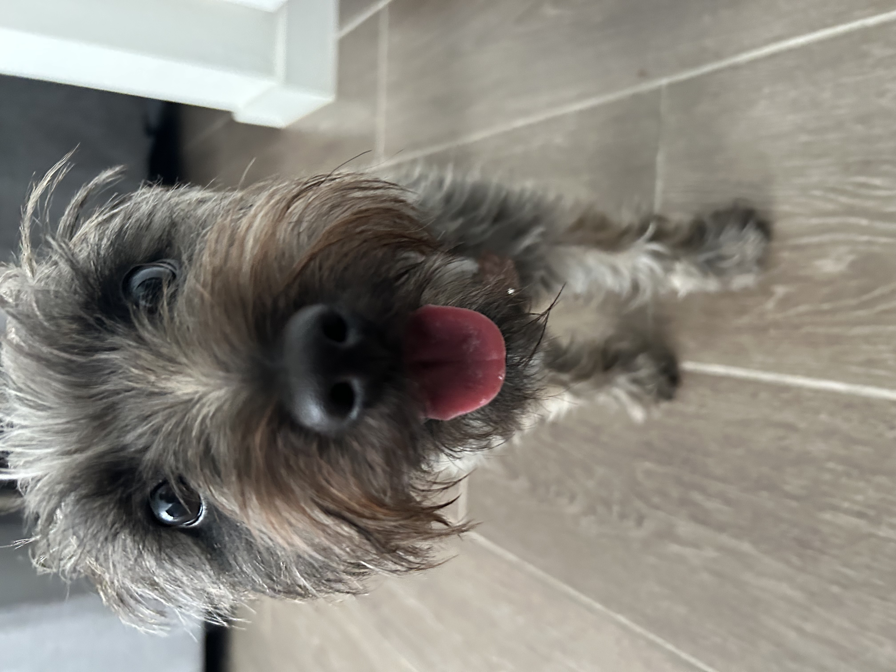
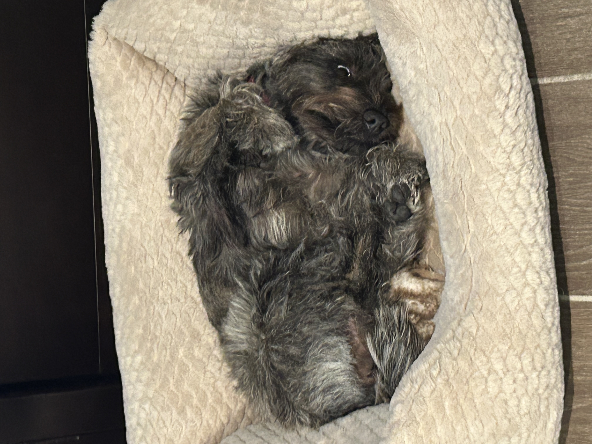
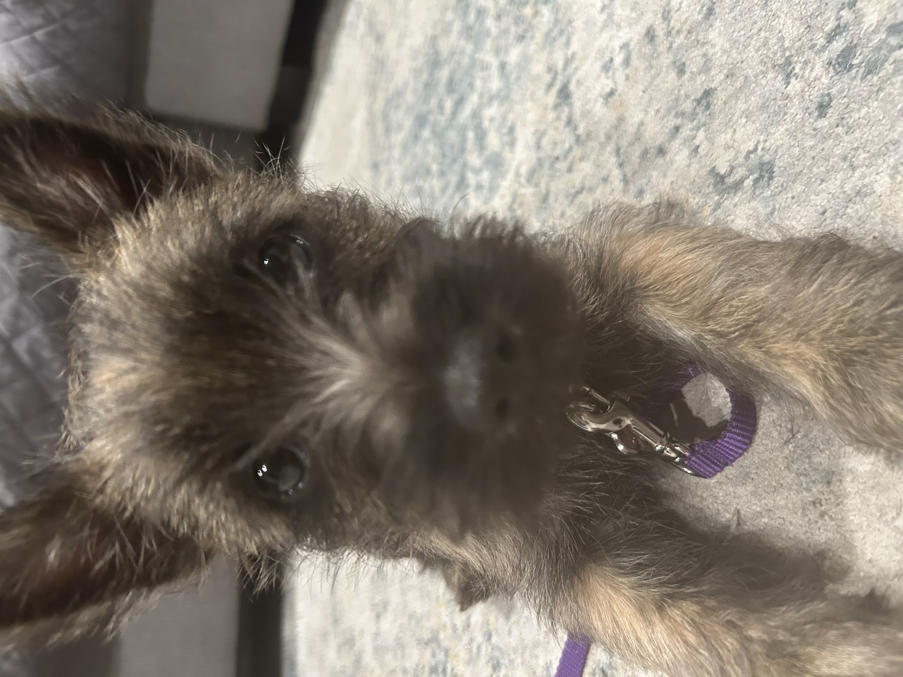

I have owned my Cairn Terrier, Grace , for a year now, and I would like to share my experience with the breed. First of all, Cairn Terriers are very smart (could be a bad thing. They can quickly learn new tricks or habits with proper instruction. Cairn Terriers are also hefty dog breeds. They aren't skinny like a Great Dane, but are built like bricks. Even if they aren't overweight, they have broad shoulders and thick muscle.
Cairn Terriers have a thick waterproof coat. For my dog, she had brindle coloring. Other colors are cream, red, gray, wheaten, and black. That is why the above image looks like a literal rug of fur instead of Dog. I have never experienced a male Cairn, but my female one is highly independent. This breed is not a lap dog, but they will occasionally cozy up with you. Another important piece of advise is to have a digging area for your Cairn. These dogs were originally bred for rat hunting, and have retained the affection for digging. Cairn Terriers are one of few dogs to have a fox-like expression. They have large eyes, pointed upright ears, and a pointed nose. Cairns also have unusually large paws for a small dog, and these will hurt when they jump on you.
Just another cute pic of Grace